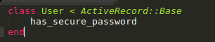
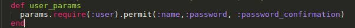
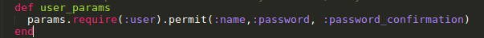
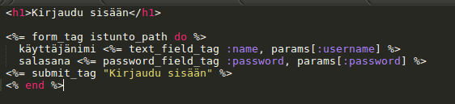
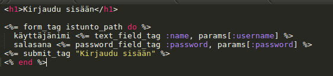

Käyttäjätunnukset ja salasanat
Tässä osassa liitämme käyttäjätunnuksiin salasanan ja luomme kirjautumisjärjestelmän.
Liitetään käyttäjään salasana
Salasanoja ei tallenneta tietokantaan selväkielisinä. Tavallista on, että salasanasta generoidaan yksisuuntainen hash eli tiiviste. Tiivisteestä ei pysty päättelemään salasanaa, mutta samasta salasanasta algoritmi generoi aina samanlaisen tiivisteen ja näin voidaan kirjautuessa tarkistaa, onko käyttäjän antama salasana oikea salasana. Otamme käyttöön BCrypt-kirjaston turvallisen salasanajärjestelmän luomiseen. Lisää Gemfileen
gem 'bcrypt', '~> 3.1.7'
ja aja
bundle install
Käyttäjään pitää lisätä password_digest-attribuutti, johon tiiviste sitten tallentuu tietokantaan. Tehdään se komennolla
rails g migration AddPasswordDigestToUser password_digest:string
Sen jälkeen User-model tulee saada näyttämään tältä, has_secure_password-metodin kutsumisen lisäys liittyy BCryptin toimintaan. Has_secure_password lisää User-olioon password ja password_confirmation-kentät. Jos näiden arvot eivät ole samat, Userin tallennus tietokantaan ei tule onnistumaan.

Ajetaan lopuksi tietokantamigraatiot komennolla
rake db:migrate
Lisätään vielä käyttäjän luomisen viewiin eli app/views/users/_form.html.erb -tiedostoon ennen submit-tagia salasanan ja salasanan vahvistuksen syöttökentät eli kyseisen tiedoston tulisi lisäyksen jälkeen näyttää tältä:
 Jos et jaksa kirjoittaa tuota niin voit myös kopioida formin koodin täältä .
UsersControllerin user_params-metodiin täytyy lisätä sallittaviksi parametreiksi password ja password_confirmation seuraavalla tavalla:

Jos et jaksa kirjoittaa tuota niin voit myös kopioida formin koodin täältä .
UsersControllerin user_params-metodiin täytyy lisätä sallittaviksi parametreiksi password ja password_confirmation seuraavalla tavalla:

Toteutetaan kirjautuminen
Keskustelukysymys: Millä tavalla toteuttaisit kirjautumisen nykyisen osaamisesi perusteella? Millä hakusanoilla etsisit tietoa googlesta (googlatkaa yhdessä)?
Toteutamme kirjautumisen sessioiden avulla. Yksi sessio-muuttujaan määritetty arvopari on yksi selaimen eväste (cookie). Käyttäjän kirjautuessa onnistuneesti sisään hänen yksilöllinen käyttäjä-ID tallennetaan sessioon. Uloskirjautuessa se poistetaan sessiosta. Railsin sessio-muuttujan arvot on oletuksena salattu niin, että käyttäjä-ID:tä ei pysty feikkaamalla asettamaan sessiomuuttujaksi sovelluksen ulkopuolelta esimerkiksi selaimesta evästeitä muokkaamalla.
Railsin sessio-muuttujaan saa tallennettua arvoja seuraavalla tavalla:
session[:user_id] = "arvo"
Luodaan Istunto-resurssi
Käyttäjällä voi olla kerrallaan vaan yksi istunto. Istunnolle ei tarvitse luoda Modelia, koska se ei ole tietokantaan tallennettava olio. Istunto on siis resurssi jolle luomme Controllerin ja reitityksen. Lisäämällä seuraavan rivin config/routes.rb-tiedostoon tehdään kirjautumissivuksi istunto/new.
resource :istunto, only: [:new, :create, :destroy]
Luodaan seuraavaksi IstuntosController tiedostoon app/controllers/istuntos_controller.rb
 Create-metodi ei ole vielä valmis. Siihen täytyy toteuttaa salasanan tarkistus ja sen perusteella joko sisäänkirjautumisen hyväksyminen tai hylkääminen. Tehdään ensin kuitenkin valmiiksi kirjautumisview. Lisää tiedosto app/views/istuntos/new.html.erb-tiedosto (vaatii istuntos-kansion luonnin ensin). Koodaa sen sisällöksi, jos et jaksa koodata niin kopioi täältä. Kirjautumissivu tulee osoitteeseen localhost:3000/istunto/new

Create-metodi ei ole vielä valmis. Siihen täytyy toteuttaa salasanan tarkistus ja sen perusteella joko sisäänkirjautumisen hyväksyminen tai hylkääminen. Tehdään ensin kuitenkin valmiiksi kirjautumisview. Lisää tiedosto app/views/istuntos/new.html.erb-tiedosto (vaatii istuntos-kansion luonnin ensin). Koodaa sen sisällöksi, jos et jaksa koodata niin kopioi täältä. Kirjautumissivu tulee osoitteeseen localhost:3000/istunto/new

Palikkatehtävä
Seuraavassa annetaan koodinpalaset joita tarvitaan salasanan tarkistuksen toteuttamiseen. Kokoa niistä salasanan tarkistus ja kokeile sen toimivuutta selaimessa.If-else-lause Rubyssa toteutetaan näin. Huomaa että kaarisulkuja ei käytetä Rubyssä
if 1 < 2
print "ifissä"
else
print "elsessä"
end
Vertailun ja kertauksen vuoksi sama toteutetaan Javassa näin:
if(1 < 2) {
System.out.println("ifissä");
} else {
System.out.println("elsessä");
}
Käyttäjän (olemassaoleva) autentikointimetodi jota kutsutaan Viewistä parametrina tulevalla salasanalla. Palauttaa true jos salasana on oikein ja false jos ei ole oikein
user.authenticate(params[:password])
Uudelleenohjaus takaisin sivulle josta käyttäjä tuli.
redirect_to :back
Uudelleenohjaus käyttäjän omalle sivulle.
redirect_to user_path(user)
Käyttäjän id:n saa näin. Kirjautumisen onnistuessa tallenna session user_id-muuttujaan käyttäjän id
user.id
Tämän palapelin jälkeen kun sisäänkirjautuminen onnistuu, lisätään config/routes.rb-tiedostoon reitti uloskirjautumiselle seuraavasti:
get 'signout', to: 'istuntos#destroy'